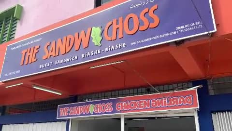

BUKEY SANDWICH BIASHE - BIASHE
Chicken Darling & The Sandwichoss Pasir Tumboh is a thriving local food kiosk located in Pasir Tumboh, Kelantan. Established with the vision of delivering crispy and flavorful chicken dishes, the kiosk has become a popular choice for food lovers in the region. Known for its signature crispy and spicy chicken tenders, Chicken Darling & The Sandwichoss has built a strong reputation for quality and taste. It was founded to fill the gap in the market for high-quality, fast-food-style chicken dishes in Pasir Tumboh. From humble beginnings, the kiosk has grown into a well-loved establishment, with loyal customers and increasing recognition through word of mouth and social media. Chicken Darling & The Sandwichoss Pasir Tumboh open start 9am to 9pm and their address at 758, Jalan Pasir Puteh, 16150 Kota Bharu Kelantan, Malaysia.